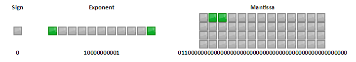
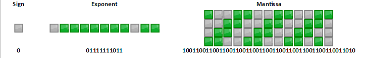

JavaScript_Number
不准确的数字
下面两个表达式返回什么结果？
Math.pow(2, 53) === Math.pow(2, 53) + 1
0.1 + 0.2
正确答案不是 false 和 0.3。想知道为什么，需要了解 JavaScript 里的数字是怎么保存的。
浮点数
JavaScript 里的数字只有一种类型 Number，它遵循 IEEE 754 标准，为 64 位双精度浮点数。所谓浮点数是相对于定点数而言的。定点数的整数部分和小数部分都有固定的长度，而浮点数则会根据实际的情况调整小数点位置。
JS 中的 64 位浮点数可以表现为以下二进制形式：
以科学计数法表示，
$$V=(-1)^{S} \times M \times 2^{E}$$
即第 1 位 S 为符号位，决定该数是正数（0）还是负数（1）。
接着 11 位 E 为指数位，取值范围 [0, 2047] 因为指数可以为负，所以在实际表示数的时候需要减去一个中间数 1023。
最后 52 位 M 为尾数，因为科学计数法中 1<=M<2 （10 进制为 1<=m<9），实际表示数时M通常默认包含第一位的 1，这样可以节省一位有效数字，因此实际有效数字为 53 位，超出的部分小于 100…000 舍去，大于进 1，等于时，如果最后一个有效位为 1 则进 1，为 0 则舍去。
有两种特殊情况
- E 为 0，M 为 0 表示 ±0，M 不为 0 则 M 不再加 1，表示非常接近 0 的小数。
- E 为 2047，M 为 0 表示 ±Infinity，M 不为 0 表示 NaN。
最后的公式为
$$V=(-1)^{S} \times (M+1) \times 2^{E-1023}(0 \leq M < 1,0 \leq E \leq 2047)$$
做两个练习
5.5 转换为二进制等于 101.1 即 $1.011 \times 2^{2}$。正数 S 为 0；有效数字为 1011，去掉首位1，则 M 为 011 余下的位补 0；指数为 2，E = 1023+2 = 1025 即 10000000001。因此 5.5 内存中保存为

0.1 转换为二进制等于 0.000110011001100… （1100无限循环）即 $1.10011001100… \times 2^{-4}$。因为是正数 S 为 0；有效数字 110011001100…，去掉首位 1，M 为 10011001100…；指数为 -4，E = 1023 - 4 = 1019 即 011111111011

JavaScript Number
回到开头的问题。
$2^{53}-1$ 为 53 位二进制数表示的最大值，Number 的实际有效数字为 53，因此超过 $2^{53}-1$的数是不能精确表示的。
$2^{53}$ 需要用 54 位二进制数来表示为 10000…， 去掉首位 1，因此 M 为 53 个 0，52 位不足，根据进位规则去掉最后一个 0。
$2^{53}+1$ 为 1.000…0001 去掉首位 1，M 为 1.000…1，因此 M 为 000…001 共 53 位，根据进位规则，舍去 1。
因此 $2^{53}$ 和 $2^{53} +1$ 在内存中的表示相同，故
Math.pow(2, 53) === Math.pow(2, 53) + 1
因此结果为 true。ECMAScript 2015 新增了 Number.MAX_SAFE_INTEGER 返回可以精确表示的最大整数——$2^{53}-1$ 即 9007199254740991。相应的，有 Number.MIN_SAFE_INTEGER。还增加了 Number.isSafeInteger()方法用于判断一个数是否是可以精确表示的整数。
对于 0.1 + 0.3，先把他们转换成二进制再相加
0.00011001100110011001100110011001100110011001100110011010 +
0.0011001100110011001100110011001100110011001100110011010 =
0.0100110011001100110011001100110011001100110011001100111
再转成十进制则是 0.30000000000000004
因此在处理超大数和小数的时候需要十分小心，可能会出现意想不到的结果。在引用列表的第一篇文章介绍了一些处理方法，感兴趣的可以看一下。
http://web.jobbole.com/92685/
http://www.ruanyifeng.com/blog/2010/06/ieee_floating-point_representation.html
https://zh.wikipedia.org/wiki/IEEE_754#.E6.B5.AE.E9.BB.9E.E6.95.B8.E7.9A.84.E6.8D.A8.E5.85.A5